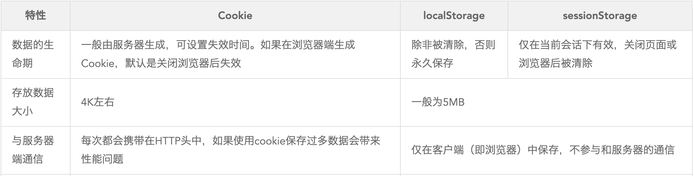
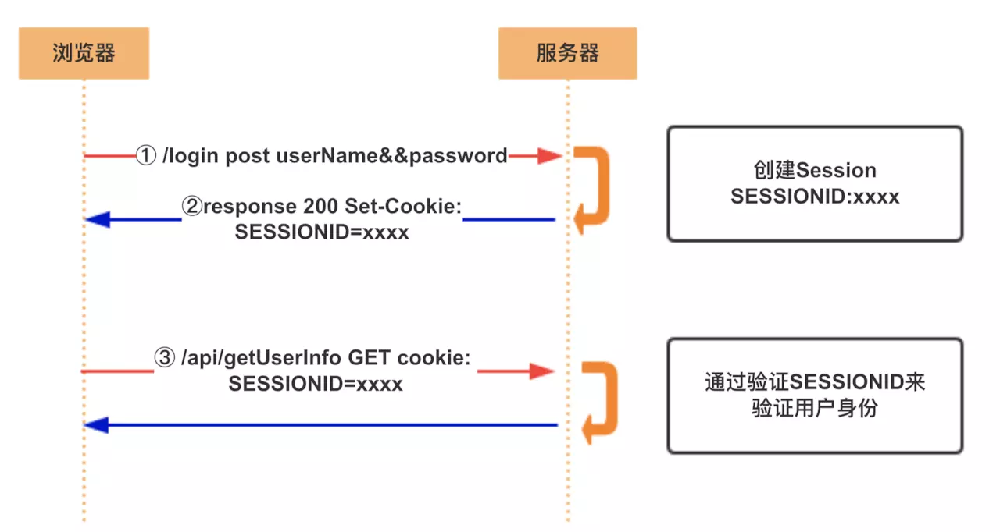
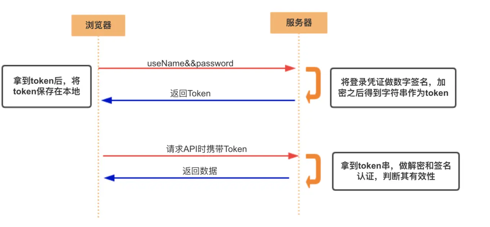

cookie、session和token
cookie
cookie是由浏览器生成发送给浏览器，浏览器把cookie以键值对的方式存储在某个目录下的文件中，下一次请求同一网站时会把该cookie发送给服务器。
缺陷
- ookie会被附加在每个HTTP请求中，所以无形中增加了流量。
- 由于在HTTP请求中的Cookie是明文传递的，所以安全性成问题。（除非用HTTPS）
- Cookie的大小限制在4KB左右。对于复杂的存储需求来说是不够用的。
Cookie，SessionStorage，LocalStorage
HTML5提供了两种本地存储的方式 sessionStorage 和 localStorage；

session
session代表会话，服务器为了区分每个客户端，给客户端分配不同的”身份标识”，然后客户端每次想服务器发请求的识货，都带上这个“身份标识”，服务器就知道这个请求是哪个客户端发的了。
过程(服务端session + 客户端 sessionId)

用户向服务器发送用户名和密码
服务器验证通过后,在当前对话(session)里面保存相关数据,比如用户角色, 登陆时间等;
服务器向用户返回一个
session_id, 写入用户的cookie用户随后的每一次请求, 都会通过
cookie, 将session_id传回服务器服务端收到
session_id, 找到前期保存的数据, 由此得知用户的身份
token
token是服务端生成的一串字符串,以作客户端进行请求的令牌,当第一次登陆后,服务器生成一个token便将此token返回给客户端,以后客户端只要带上这个token前来请求数据即可,无需再次带上用户名和密码
过程

- 用户通过用户名和密码发送请求
- 程序验证
- 程序返回一个签名的token给客户端
- 客户端储存token, 并且每次用每次发送请求
- 服务端验证Token并返回数据
JWT
- 头部
- 负载
- 签名